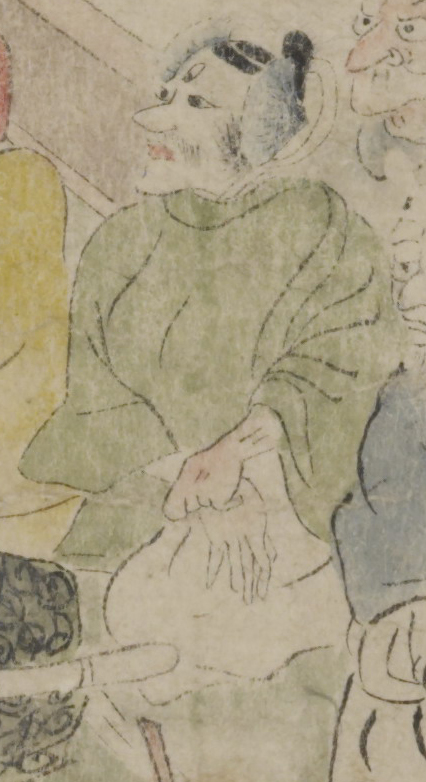

三つ目の鬼。冠と老懸を付け、額の真ん中に縦に3つめの目が付いている。顎ひげを生やしている。緑色の上着に白色の袴をまとい、座っている。
著作者：坂本弥一郎徳定／出典：親書誌：U426_nichibunken_0080：伊吹山酒呑童子絵巻；イブキヤマシュテンドウジエマキ／日付：2007／資源識別子：U426_nichibunken_0080_0003_0003
Copyright (c)2010- International Research Center for Japanese Studies, Kyoto, Japan. All rights reserved.